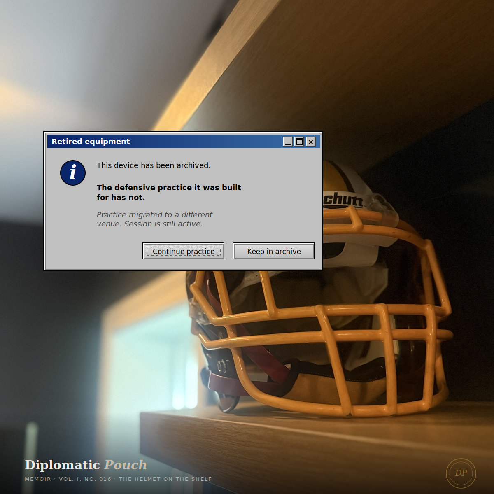

The Helmet on the Shelf
I was six years into federal cybersecurity when I put the pads on. For five seasons, I played defense in two leagues at once. On what that specific overlap taught me about the practice.

There is a football helmet on a shelf in my house. Burgundy base, white and gold stripe down the center, gold Schutt facemask, chin strap tucked up the way you tuck it when you take the helmet off between drives. I did not put it on a shelf to display it. I put it there because the garage already had too much on the wall and the helmet needed a flat surface above the dust line. It has been there for years. I walk past it most days without noticing it. Some days I notice it and keep walking. A few times a year I stop.
This dispatch is about one of those few-times-a-year moments.
The thing a helmet knows, that most equipment does not know, is that it was engineered for the specific violence of a specific sport played by a specific body. It was fitted to my skull. The padding compressed, over seasons, to the exact shape of the parts of my head that received the most contact. The facemask was configured for the positions I played — linebacker and defensive back, which means I spent snaps reading the backfield and snaps running with receivers, and the facemask had to clear sight lines for both. The chin strap was tightened to a tension that was muscle memory to clip and unclip. The helmet is not a generic artifact. It is a specific one, built for a specific operator, and the operator does not play anymore.
I do not play anymore. The helmet still fits.
Two defenses, running at the same time
I joined the D.C. Divas in 2014. The Divas are a women's professional tackle football team in the Women's Football Alliance, based in the DMV, with a championship pedigree and a culture that is as serious about the game as any locker room I have ever been in. I played five seasons. Linebacker and defensive back. Burgundy, white, and gold. I retired in 2018.
I did not come to football the way most Divas came to football. I was already six years into a federal cybersecurity career. By the time I put the Divas pads on for the first time, I had been through the daily USAID agency notices, had moved into the Air Force and Space Force work as a Base Information Security Manager with responsibility for critical space systems, was deep in the kind of federal security practice that runs on long nights and classified rooms and the specific adrenaline of knowing you are the person responsible if a particular thing goes wrong. The football was not an escape from the cybersecurity. The cybersecurity was not an escape from the football. For five seasons, both ran in parallel, in the same body, calling defenses on alternating days of the week.
I want to tell you what that overlap actually taught me, because it is not what I would have predicted going in, and it is not what the sports-to-work transition narrative that most professionals carry would predict either.
The record
The record is a matter of public history, so I will state it plainly before going back to the subject the dispatch is actually about.
Twenty-one career turnovers recovered — thirteen interceptions and eight fumble recoveries. Third in team history for the Divas. Ten of those takeaways came in 2016, the year I was a starter on the national championship team. That year I was named National Conference Defensive Player of the Year. First Team All-American in 2016 and again in 2017. Team captain in 2017. Winner of the 2016 Posey Award as the women's football defensive player of the year in the National Capital region. Hall of Fame finalist for the Divas, number fourteen of fifteen, by my jersey number and by order of consideration.
There is a specific play from the 2016 season I think about more than the awards. We were on the road at Chicago, the Force, a critical conference game. I intercepted a pass at the goal line as time expired. We won 41-34. That interception preserved a road win against a conference rival that mattered for seeding. I remember the ball in my hands at the whistle more clearly than I remember the award ceremonies that followed from the season that interception helped make possible. The award is a secondary artifact. The ball at the whistle is the primary one. Every defensive player I know who has had a moment like that will tell you the same thing. The play is the memory. The plaque is just the paperwork.
What the overlap taught me
The thing I want to describe for other practitioners is what happens when you run two defensive practices concurrently in the same nervous system.
I expected the practices to be separate. Football on Saturdays and Sundays, cybersecurity Monday through Friday, each one its own compartment, each one giving the other a break from the other's specific pattern of demand. That is not what happened. What happened was that the two practices started teaching each other, and within about eighteen months I could not fully say which practice had taught me a given habit of mind.
The habit of reading a backfield before the snap — the specific skill of looking at the alignment of the running back and the receivers and the quarterback's shoulders and the center's hand pressure, and compressing all of it into a prediction of what play is about to be run — is the same cognitive move as reading a packet capture before a detection fires. The posture of the data tells you what is about to happen if you have spent enough reps learning the postures. On the field, you are predicting run-left or run-right or play-action-pass. In the SOC, you are predicting reconnaissance or lateral movement or exfiltration. The specific vocabulary is different. The cognitive move is identical.
The habit of trusting ten other defenders behind you to do their work while you do yours — the specific release that happens when a linebacker commits to a gap and accepts that if the gap read is wrong, the safety behind him has to clean it up — is the same release that happens when a security engineer commits to a hypothesis during an incident and accepts that if the hypothesis is wrong, the next analyst in the rotation will have to catch what she missed. The release is not confidence. It is a specific kind of distributed trust that only exists in defenses that have practiced together long enough to know what each player will and will not do. I had that trust on the Divas. I have it with the security teams I now lead. The practice of building it is the same practice.
The habit of absorbing the hit when the read was wrong, and getting up for the next snap without carrying the last one, is the same habit I use when I misdiagnose a control gap in a program review and have to recover without the recovery itself becoming the new problem. In football this is called a short memory. In security it does not have a name, but the practitioners who have it stay in the field and the ones who do not burn out inside five years. The short memory is not a trick. It is a trained response to being wrong about something that matters. The training is the same training whether the venue is a sideline or an incident bridge.
The specific vocabulary is different. The cognitive move is identical.
What the helmet protected, and from what
A football helmet is a specific piece of defensive engineering. It is not armor in the general sense. It is engineered to protect one organ — the brain — from one specific kind of impact — the sub-concussive repetitive load of a contact sport played thousands of snaps across a career. The engineering is explicit about what it protects and what it does not. It does not protect the knees. It does not protect the shoulders. It does not protect against the slow accumulation of hits that no single hit will reveal. It protects what the engineers decided was most worth protecting, in a system where something would be hit either way.
I think about this engineering choice almost every time I design a security control. There is no security program that protects everything from everything. There is a security program that makes a specific choice about which asset is most worth protecting from which specific threat, accepts that other assets will take hits, and designs its padding around the organ that matters most. The helmet is this choice literalized. It says: this is what we are willing to let get hit, and this is what we are not.
Every security leader I have ever advised has had to make the same choice, often without naming it as such. You cannot protect everything. The budget is finite. The threat surface is infinite. The question is not how to prevent all harm. The question is which specific harm will end the career of the organization, and how do we build the padding around that one organ, accepting that the knees and shoulders will take some hits we cannot prevent. The helmet is the answer to the first question. The rest of the pads are the answer to the second.
What the body remembers
Here is a thing I did not expect about retiring from a contact sport. The body does not stop being a contact-sport body for a long time after you stop playing. For the first several years, I would flinch at sudden motion in my peripheral vision — a car door opening, a kid running out from behind a parked car — in the specific way a defensive back flinches when a receiver cuts hard across his zone. The flinch was not fear. It was pattern recognition. My body was still running the subroutine that had kept me intact across every snap of five seasons.
The subroutine did not know I had retired. It kept running for years. It is still running, in a reduced form.
I have come to believe that this is what deep practice does to a human nervous system. The practice does not sit in a folder on your mental desktop that you can delete when you no longer need it. It gets written into the body. It becomes part of how you perceive the world. Years after the venue of the practice is gone, the practice is still shaping your perception, your reflexes, your sense of what counts as a threat and what counts as noise.
This is the thing I most want other practitioners to understand about the cybersecurity career. The field is going to write itself into your body. The patterns you learn in your first five years of threat work are going to shape how you read every room you walk into for the rest of your life. You will notice the ways in which an organization's physical environment leaks information. You will notice the ways in which a conversation reveals a trust relationship that someone did not mean to reveal. You will notice the ways in which the person across the table is or is not what their credentials claim. The field will train you in all of this, whether or not you consented to the training. Once trained, you cannot untrain. The subroutine runs for the rest of your life.
The defensive coordinator
The personal-brand framing I use for my consulting practice is executive Defensive Coordinator. The phrase is not an accident. It is the specific transposition of the football role I played into the professional role I now play. Both are the person responsible for anticipating what the other side is about to do, calling the right coverage before the snap, trusting the ten other people in the formation to execute, and taking the responsibility when the call was wrong.
I did not pick the metaphor to be clever. I picked it because the muscle memory is the same. When I walk into an incident response, my body does the thing it did in the huddle before a critical third-and-long: slows down, gets quieter, scans for the one or two tells that will reveal what the other side is going to run. The adrenaline is the same adrenaline. The decision architecture is the same decision architecture. The venue is a video-conferencing incident command center instead of a sideline, and the uniform is a suit instead of burgundy and gold, but the practitioner is the same person doing the same specific job.
The practitioners I know who came to cybersecurity from team sports have an advantage they often do not credit. They understand, in a way that purely academic entrants sometimes do not, that defense is a coordinated eleven-person activity. The person who thinks they are going to solve the attack by themselves, through sheer individual excellence, is the person who gets beaten on a double move. Defense is a system. The system beats individual brilliance on offense most of the time. When it does not, the coordinator reviews the film, finds the breakdown, and adjusts the coverage. The practice is systemic. The glory is distributed. The responsibility sits on the person holding the headset.
What the shelf means
The helmet is on a shelf because I retired from the sport that required it. The shelf is in a house I own because of the career that ran alongside and continued past the football years. The two things are connected across the specific five seasons when they ran concurrently. The engineering decisions that went into protecting my brain during the Divas years are the same decisions, abstracted up two levels, that I now make about how to protect an organization's most critical data from the attacks that would end its career.
I look at the helmet, when I bother to look at it, and what I notice now is not nostalgia. It is professional recognition. The helmet is a well-designed piece of defensive equipment that made specific trade-offs about which hits were worth absorbing and which were not. The shelf is the archive of a practice that did not end when the equipment was retired. The practice continued in the venue that had always been its primary venue — the one that paid the mortgage, the one that gave the football years their specific flavor of parallel discipline, the one I am still inside.
If you are a practitioner reading this and you have ever run two serious practices concurrently — a sport and a career, a creative discipline and a technical one, parenting and leadership, caregiving and craft — I want you to know that the overlap is not stolen energy. The overlap is a specific kind of compounding. The nervous system you build in one practice becomes available to the other, in both directions, in ways that neither practice alone would have produced. The professionals who tell you to pick one are not wrong about focus. They are wrong about what focus is for. Focus is for the specific hour you are inside the practice. Breadth is for the forty-year arc the practices build together.
The helmet on the shelf is not a trophy. It is a reminder. The sport ended. The practice did not. The defense continued, in a different formation, calling different coverages, against a different offense, in a venue that was always there underneath. The practitioner is the same practitioner. The organ being protected is a different organ. The engineering choice — this is what we will not let get hit — is the same choice I make every day for the organizations I now serve.
The helmet knows. It has been trying to tell me this for the better part of a decade. I think I am finally ready to listen.
Next dispatch ── To be sealed in January.
— Dr. Safi Mojidi